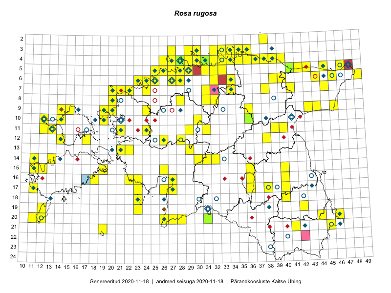

Rosa rugosa
Uuendatud: 2016-12-01
Kaardile koondatud taksonid: Rosa rugosa Thunb. ex Murray

Kaart põhineb 267 kirjel.
Kuvatud viited 20 esimesele andmebaasikirjele, ülejäänud PlutoFis
- Peedu Saar, Timo Luhamäe: 2015-05-09: 12-28: ala
- Peedu Saar, Timo Luhamäe: 2015-05-09: 12-28: GPS punkt
- Peedu Saar, Toomas Kukk: 2015-05-27: 09-15: ala
- Toomas Kukk, Eerik Leibak: 2015-08-10: 09-14: ala
- Toomas Kukk, Eerik Leibak: 2015-08-10: 09-14: GPS punkt
- Rein Kalamees, Kersti Püssa: 2015-08-31: 04-32: ala
- Rein Kalamees, Kersti Püssa: 2015-09-06: 03-32: ala
- Rein Kalamees, Kersti Püssa: 2015-08-04: 03-33: ala
- Tiit Hallikma, Toomas Kukk: 2015-07-21: 05-45: ala
- Peedu Saar, Liina Oja: 2015-07-21: 06-44: GPS punkt
- Rein Kalamees: 2015-09-03: 05-32: ala
- Rein Kalamees: 2015-08-09: 05-31: ala
- Rein Kalamees, Kersti Püssa: 2015-09-02: 03-36: ala
- Toomas Kukk, Raivo Kalle: 2015-05-13: 07-38: ala
- Toomas Kukk, Raivo Kalle: 2015-05-13: 07-38: GPS punkt
- Toomas Kukk, Raivo Kalle: 2015-05-12: 11-40: ala
- Peedu Saar, Thea Kull: 2015-06-17: 17-38: GPS punkt
- Tiit Hallikma, Toomas Kukk: 2015-07-21: 05-45: GPS punkt
- Tiit Hallikma, Toomas Kukk: 2015-07-21: 05-45: GPS punkt
- Toomas Kukk, Raivo Kalle: 2015-05-12: 11-40: GPS punkt